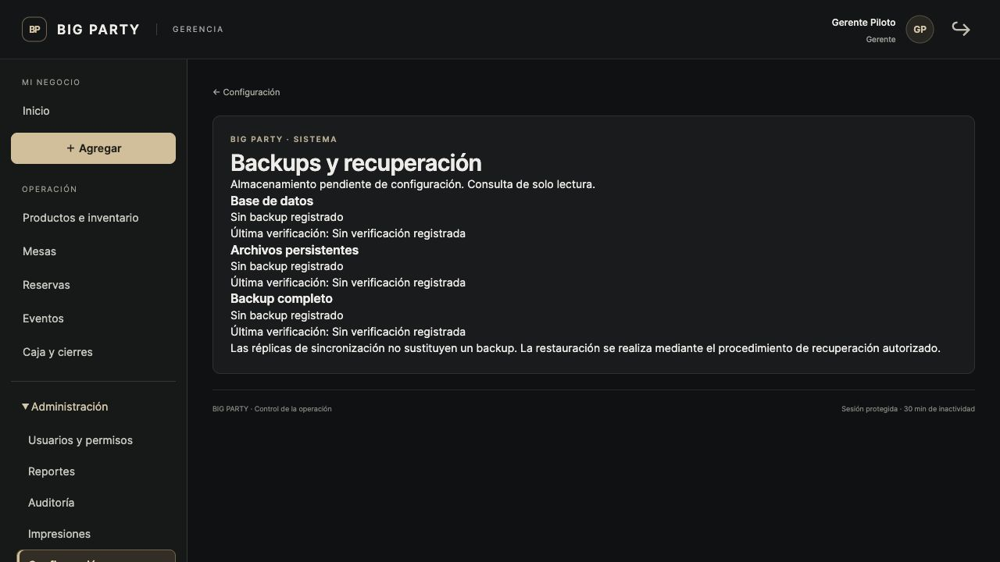
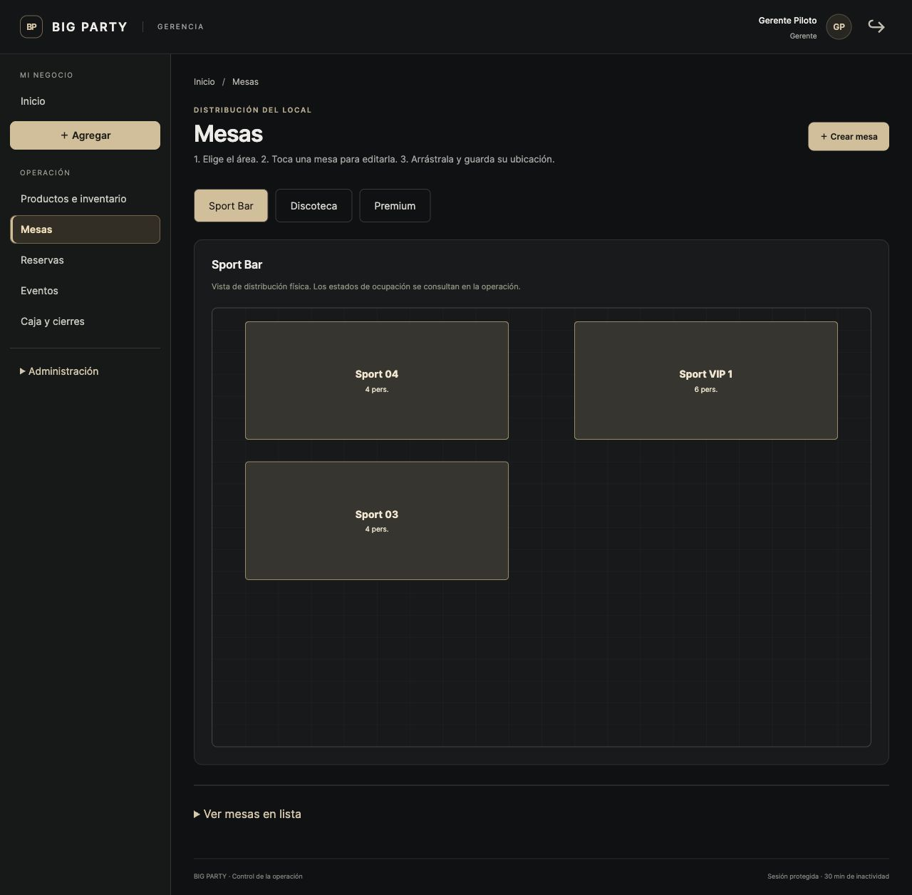

BIG PARTY · REVISIÓN DEL PILOTO LOCAL · 03 OCT 2026Auditoría funcional
y de diseño
La base funcional tiene una cobertura amplia. La mejora más importante ahora es ayudar al gerente a completar cada tarea sin adivinar qué falta, y corregir los puntos que pueden provocar errores de operación.
Revisión de solo lectura sobre el negocio. No se registraron ventas, movimientos de inventario, reservas ni cambios de configuración.
1,095Pruebas del sistema ejecutadas
7 / 7Pruebas adicionales de interacción aprobadas
13Hallazgos y oportunidades priorizados
Resultado exacto: 1,094 pruebas pasaron en la ejecución completa; una prueba de perfiles de arranque excedió 15 segundos. Esa prueba pasó al repetirla con la caché de Python en una carpeta temporal, también para sus procesos hijos. La revisión de configuración de Django no informó problemas. Esto no sustituye una prueba física con impresoras, lectores y dispositivos reales.
Qué revisé y con qué profundidad
| Área | Comprobación realizada | Límite de esta revisión |
|---|
| Gerencia, inventario, mesas, reservas, eventos, usuarios y reportes | Pantallas reales, formularios, código y pruebas automatizadas. | Sin guardar cambios sobre los datos del piloto. |
| Web pública y reservas | Inicio, reserva, disponibilidad de mesas; diseño de reservas a 390 px. | No se envió una solicitud real ni un comprobante. |
| Caja, meseros, pagos, anulaciones y cierres | Código, plantillas y pruebas de reglas, permisos y concurrencia; revisión visual de sus accesos. | Este navegador no está configurado como caja ni tablet. No se recorrió una venta real de extremo a extremo. |
| Entradas y control de acceso | Pruebas de compras, confirmaciones, PDF, QR y accesos. | Sin cámara o lector físico, ni evento público activo utilizado para una compra real. |
| Impresión, respaldos, sincronización y trabajo sin conexión | Pantallas disponibles, código y suite automatizada. | No se imprimió papel, restauró una copia real ni activó Local Node/Cloud. La sincronización no está disponible en este perfil de piloto. |
Corregir primero
ALTA01 · Preparación operativaNo hay respaldos registrados en el piloto
Evidencia: la pantalla de respaldos muestra “Almacenamiento pendiente de configuración”, sin copias ni verificaciones registradas para base de datos, archivos o respaldo completo.
Consecuencia: la recuperación de los datos de este piloto no está demostrada mediante el sistema. Esto no prueba que no exista alguna copia externa.
Mejora: configurar copias automáticas, alertar cuando falten o estén antiguas y ensayar una restauración en un entorno separado antes de operar con información indispensable.
Ver evidencia
/gerencia/configuracion/backups/ · apps/core/ops/views.py

Hay mesas que se ocultan entre sí
Evidencia: Sport 01 y Sport 04 tienen exactamente el mismo rectángulo; Sport 02 y Sport VIP 1 también. La mesa situada encima tapa la anterior en el plano de Gerencia.
Consecuencia: el gerente puede pensar que faltan mesas o no lograr seleccionarlas. La reserva pública se protege mostrando una lista con “distribución pendiente”, por lo que tampoco presenta el plano esperado.
Mejora: detectar solapamientos, advertir cuáles mesas se cruzan y ofrecer una distribución inicial sin superposiciones. Conservar el acceso por lista para corregir cualquier mesa.
Ver evidencia
/gerencia/mesas/ · templates/operations/management/partials/floor_plan.html · apps/tables/models.py · apps/core/public_site.py: has_public_layout

Crear un producto oculta decisiones esenciales
Evidencia: nombre, categoría y precio están visibles; preparación y control de inventario quedan dentro de “Más opciones”. Los valores iniciales son sin preparación, inventario desactivado y precio cero.
Consecuencia: completar únicamente lo visible permite dejar un producto sin descuento de existencias o sin la ruta de preparación que necesita. La categoría Comida no determina automáticamente Cocina.
Mejora: comenzar con “¿Qué vas a vender?”: producto por unidad, bebida preparada, comida o combo. Mostrar preparación e inventario según esa elección; revisar el resumen y advertir un precio de cero antes de guardar.
Referencia
apps/operations/management/catalog_views.py: product_edit · apps/catalog/models.py: Product · apps/operations/management/catalog_forms.py: ProductForm
Una jornada antigua se presenta como la jornada actual
Evidencia: el 3 de octubre, Inicio, Caja y reportes muestran abierta la jornada del 29 de septiembre. Se señalan dos pendientes de cierre, pero no una advertencia destacada por la antigüedad.
Consecuencia: es fácil interpretar los datos como ventas de hoy, aunque pertenecen a otra fecha comercial. En un piloto puede ser intencional; la interfaz debería hacerlo evidente.
Mejora: aviso “Sigues trabajando en la jornada del 29/09”, antigüedad visible y enlace al cierre. La política debe permitir jornadas que cruzan medianoche y nunca cerrar automáticamente una caja con pendientes.
Referencia
/gerencia/ · /gerencia/cierres/ · apps/operations/management/report_queries.py: Period
Simplificar los flujos
MEDIA05 · Caja y cierresHay pendientes que no indican cómo resolverlos
“Pedido 000003 continúa activa” aparece sin acceso directo, mientras que la caja abierta sí tiene “Revisar”. El código solo agrega enlaces para pagos pendientes y cajas abiertas.
Mejora: cada bloqueo debe mostrar mesa o pedido, responsable, motivo y siguiente acción permitida. Así el gerente sabe a quién pedir el cierre o dónde revisar, respetando los permisos de cada panel.
Referencia
apps/operations/management/queries.py: blocker_rows · templates/operations/management/partials/blockers.html
Las acciones quedan fuera de la vista
Evidencia: a 390 px, la tabla mide 650 px dentro de un contenedor de 356 px. Para encontrar Editar, Código y Recibir hay que desplazarse horizontalmente; las filas además ocupan mucho alto. Las tarjetas iniciales empujan la búsqueda hasta la parte inferior de la primera pantalla.
Mejora: fichas compactas de producto en móvil con nombre, existencias, precio y una acción principal; agrupar las secundarias en un menú. Mantener la tabla en computadora y acercar la búsqueda al encabezado.
Referencia
/gerencia/inventario/ · templates/operations/management/inventory.html
Conviven flujos nuevos y antiguos
La recepción y salida nuevas muestran antes/después y protegen la confirmación repetida. “Corregir cantidad” todavía pide aumentar o reducir una diferencia calculada por el usuario. También permanecen las rutas antiguas de recepción, que escriben directamente sin la confirmación identificada del flujo nuevo.
Mejora: una sola experiencia para entradas y salidas; para un conteo físico, preguntar “¿Cuántas unidades contaste?” y calcular la diferencia. Reutilizar la revisión y protección frente a reenvíos en todas las rutas. El riesgo de duplicado de los formularios antiguos se identificó en código, no mediante una escritura real.
Referencia
apps/operations/management/catalog_views.py: stock, stock_create · apps/operations/management/inventory_views.py: commit_movement
Un cambio de existencias obliga a volver a escribir el movimiento
Si una venta cambia el saldo entre revisión y confirmación, se rechaza correctamente el movimiento. Sin embargo, la respuesta reconstruye un formulario vacío y pierde producto, cantidad y observación que el gerente había ingresado.
Mejora: conservar esos datos cuando la confirmación firmada sea válida, mostrar el nuevo saldo y pedir otra revisión. Nunca reutilizar una confirmación inválida ni aplicar silenciosamente un movimiento con información desactualizada.
Referencia
apps/operations/management/inventory_views.py: move, bloque de manejo de errores · apps/operations/tests/test_inventory_workflow.py
El alta de un empleado da instrucciones contradictorias
Con el rol Mesero seleccionado, “PIN inicial” y su confirmación aparecen como opcionales, pero el formulario los exige al validar. Además, el rol y los permisos se completan en pasos separados, lo que puede dejar un empleado creado pero sin acceso suficiente.
Mejora: marcar claramente la credencial obligatoria según el rol y terminar con una revisión sencilla: “Puede tomar pedidos / cobrar / administrar”. Ofrecer las sugerencias existentes para revisión explícita, evitando conceder permisos de más automáticamente.
Referencia
/gerencia/usuarios/crear/ · apps/operations/management/user_forms.py: UserForm.clean
La reserva obliga a decidir antes de conocer la disponibilidad
Primero se elige una mesa entre todas las áreas y después fecha/hora/personas. La disponibilidad se comprueba al guardar. Los campos de monto, porcentaje y aplicación del anticipo permanecen visibles incluso sin requerir anticipo.
Mejora: fecha, hora y personas → mesas disponibles → cliente → anticipo solo si aplica → resumen. Mostrar duración como opciones de horas y avisar disponibilidad antes del guardado, conservando la validación final contra reservas simultáneas.
Referencia
/gerencia/reservas/nueva/ · apps/reservations/forms.py: ManualReservationForm · templates/reservations/form.html
Completar capacidades e información
MEDIA11 · Alcance de inventarioEl inventario cuenta unidades; no mide automáticamente ingredientes
Existencias y componentes de combos usan cantidades enteras. En el piloto, Mojito y Margarita aparecen “Sin control”. Una bebida preparada no tiene por sí sola una receta que descuente mililitros de una botella. Tampoco hay campos estructurados de proveedor, factura o costo en el movimiento nuevo; esos datos solo pueden anotarse en la observación.
Mejora propuesta, no fallo del flujo actual: definir unidades, presentaciones de compra y recetas antes de prometer control de botellas abiertas o costo real por trago. Introducirlo en Gerencia con opciones simples, manteniendo la toma de pedidos existente.
Referencia
apps/catalog/models.py: Product.stock_quantity, ComboComponent.quantity · apps/inventory/models.py · apps/operations/management/inventory_views.py: MovementForm
Falta información práctica para planificar la visita
La página muestra “Guatemala” y una ruta de Google Maps, pero no una dirección detallada, horario de apertura ni contacto público visible en la versión revisada. La reserva móvil es legible, aunque la imagen de cabecera ocupa buena parte de la primera pantalla.
Mejora: completar dirección, horarios y contacto en la configuración; acercar el formulario de reservas al inicio en móvil. Las fotos ilustrativas fueron solicitadas como temporales: sustituirlas por las reales cuando estén disponibles, sin tratarlas como un defecto de programación.
Referencia
/ · /reservas/ · apps/core/venue_information.py: venue_context
La etiqueta ya existe, pero el alcance del escaneo debe quedar claro
Gerencia genera o guarda un código, permite buscar por él y ofrece un PDF. La selección de producto para un movimiento sigue siendo una lista. El catálogo de Caja/Meseros busca por nombre, no por código: esto conserva el alcance anterior solicitado y no es una regresión.
Mejora: dentro de Gerencia, permitir escanear directamente para recibir o retirar unidades, y generar etiquetas por lote. Probar una etiqueta física con el lector que usará el negocio. Cualquier ampliación a Caja debe decidirse por separado.
Referencia
apps/operations/management/inventory_views.py: MovementForm, label · apps/operations/ordering.py: catalog_data
Qué conservar
- El menú lateral, la identidad oscura con acentos dorados y los formularios guiados aportan coherencia.
- Los movimientos nuevos tienen revisión antes de guardar, control de saldo y protección frente a confirmaciones repetidas.
- Los cierres bloquean operaciones pendientes; no conviene eliminar esas protecciones para aparentar simplicidad.
- La reserva pública distingue solicitud y confirmación, y evita dibujar un plano con mesas superpuestas.
- La cobertura automática incluye permisos, pagos, reembolsos, inventario, reservas, entradas, sincronización y concurrencia.
Orden recomendado de trabajo
- Preparación operativa: respaldo verificado y alerta de jornada antigua.
- Errores que pueden confundir la operación: mesas superpuestas y alta guiada de productos.
- Tareas completas: resolver pendientes de cierre desde su aviso; unificar recepción, salida y conteo físico; conservar datos ante conflictos.
- Facilidad de uso: inventario móvil, reserva interna y alta de empleados.
- Ampliaciones: ingredientes, presentaciones, costos y etiquetas por lote, después de definir cómo se comprarán y venderán los productos.
En eventos y reportes no apareció una falla funcional reproducible en esta revisión. Como mejora de experiencia, conviene presentar una lista de preparación antes de publicar un evento —fecha, aforo, precios, imagen y forma de pago— y destacar la fecha comercial efectiva de cada reporte.